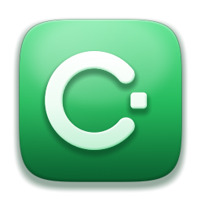

IDENTITY
One company.
A consistent foundation.
- Official Cohnsoft artwork, copied unchanged.
- Cohn Sans, bundled for offline use.
- Golden Gate surfaces and design tokens.
- Source commit and asset checksums recorded.

COHNSOFT · PILOT 01
A product of Cohnsoft.
Repository scaffoldA shared identity, ready for the work ahead.
This is a brand documentation preview. An application has not been implemented in this repository. The proposed product name is awaiting review.
IDENTITY
IMPLEMENTATION STATUS